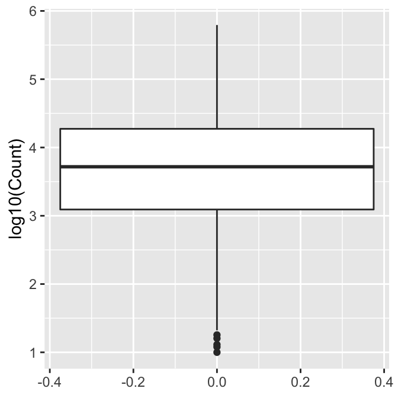
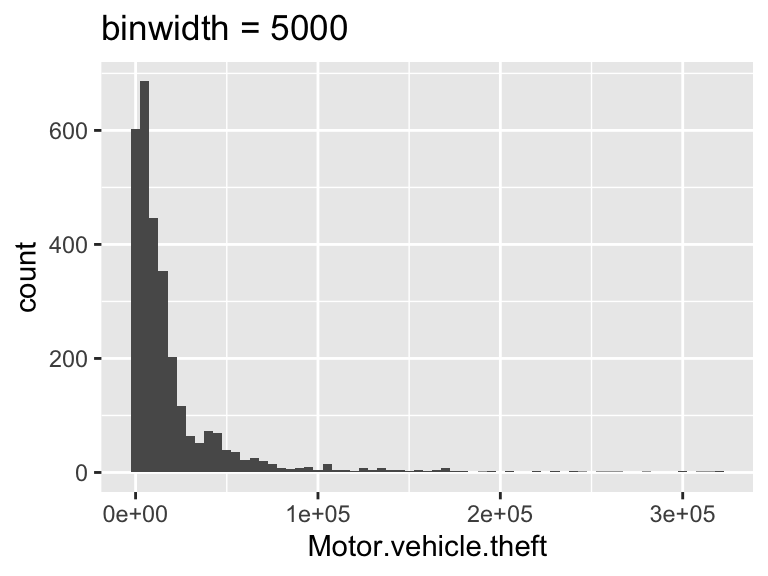
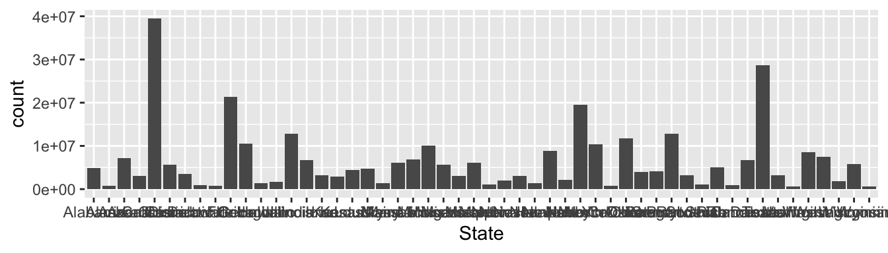
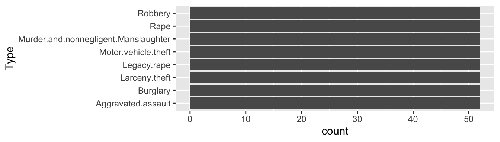
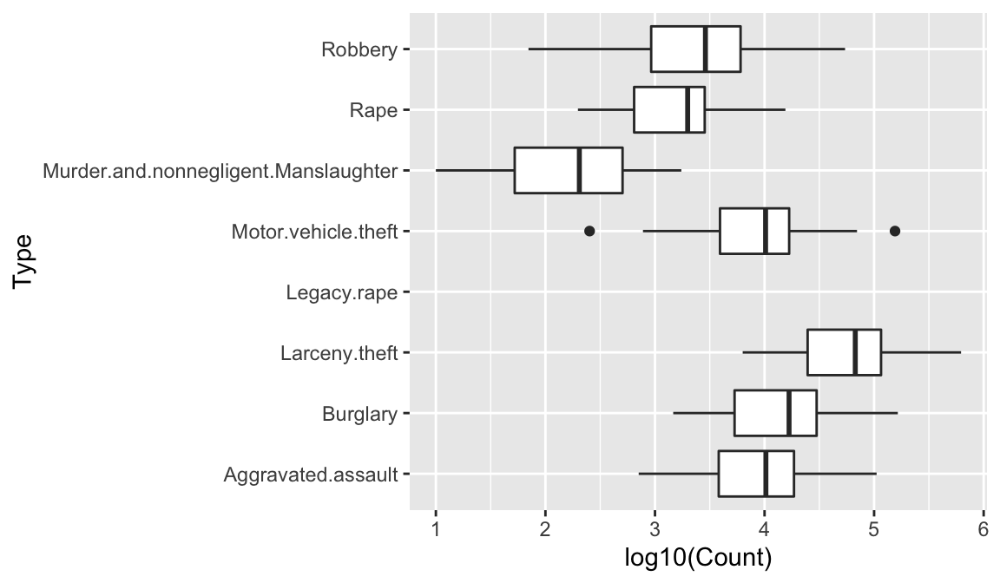
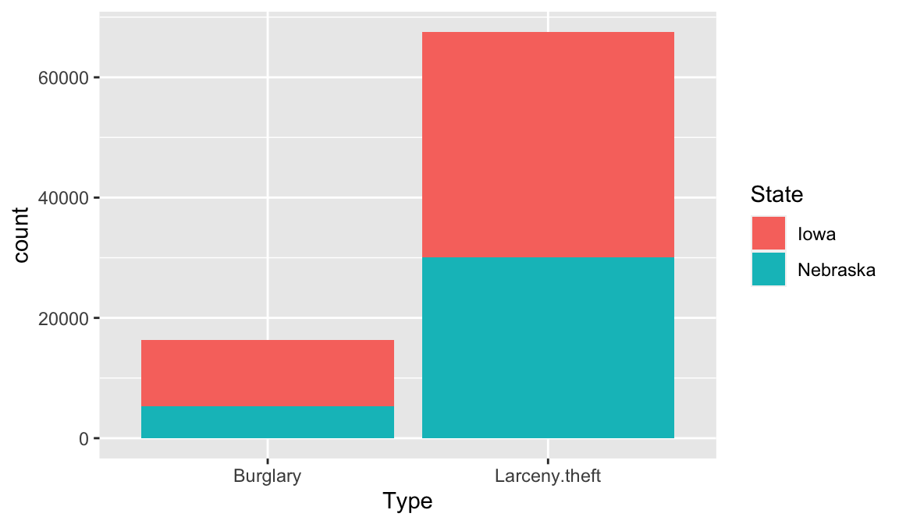
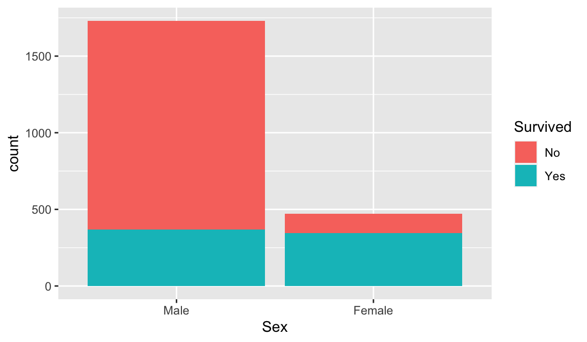
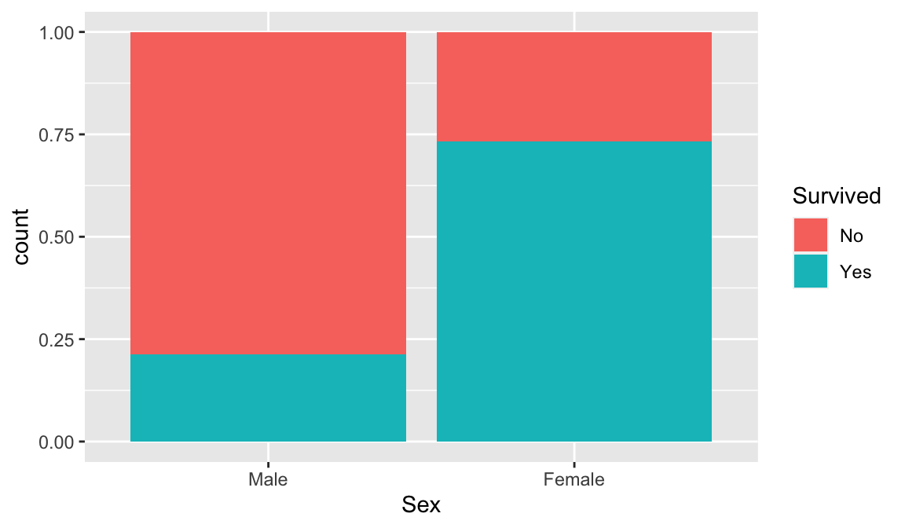
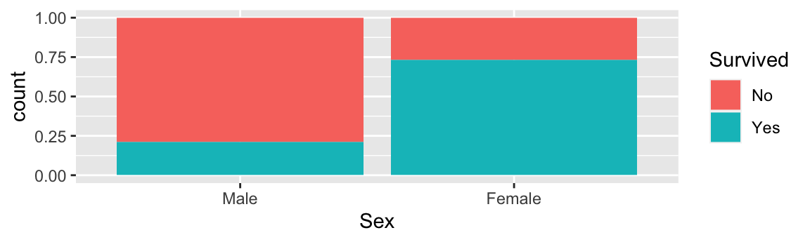
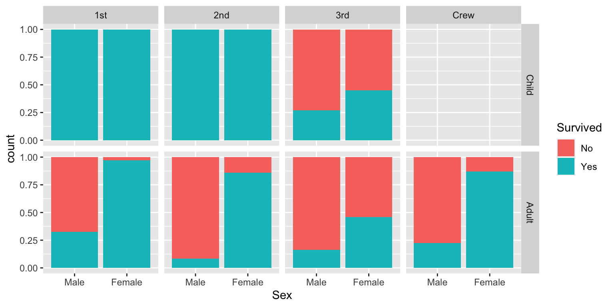

DS 202: Using ggplot to Perform Exploratory Analysis
Xiongtao Dai
ggplot for Exploratory Analysis
Choosing plots for answers
- Explore how one variable is distributed: barchart, boxplot, or histogram
- Explore how two variables are related:
- two numerical variables: scatterplot or line plot
- one numerical variable and one categorical: side-by-side barchart, boxplot, or histograms
- two categorical variables: side-by-side barchart
- Explore how more variables are related: facetting, color & other aesthetics
Boxplots
geom_boxplot in ggplot2 needs y aethetics
library(ggplot2)
library(classdata)
fbi2018 <- fbi[fbi$Year == 2018, ]
ggplot(fbi2018, aes(y = log10(Count))) + geom_boxplot()

Histograms
- A histogram needs
x aethetics
- Optionally, set the binwidth using
geom_histogram(binwidth=...)
bw <- 5000
ggplot(fbiwide, aes(x = Motor.vehicle.theft)) +
geom_histogram(binwidth=bw) +
ggtitle(paste0("binwidth = ", bw))

Changing binwidth in a histogram
bw <- 1000
ggplot(fbiwide, aes(x = Motor.vehicle.theft)) +
geom_histogram(binwidth=bw) +
ggtitle(paste0("binwidth = ", bw))

Histograms
What do we look for?
- Shape of the distribution
- Symmetry/Skewness
- Modes, Groups (big pattern: where is the bulk of the data?)
- Gaps & Outliers (deviation from the big pattern: where are the other points?)
Boxplot vs Histogram
- Pros for Boxplot:
- Quick and compact
- Easy comparisons across multiple treatments (side by side boxplots)
- Highlights outliers
- Pros for Histogram:
- Displays all information of the distribution (shape, skewness, etc.)
- Shows all modes and gaps in the data
Barchart
ggplot(fbi2018[fbi2018$Type == 'Burglary', ], aes(x = State, weight=Population)) + geom_bar()

ggplot(fbi2018, aes(x = Type)) + geom_bar() + coord_flip()

Barchart
- Barchart is for showing the counts of a categorical variable or the data values of a continuous variable
- If the x-labels overlap, one can switch the x- and y-axes using
coord_flip()
- The bars need to be ordered consciously
Scatterplot
iowa <- fbiwide[fbiwide$State == 'Iowa', ]
ggplot(iowa, aes(x=Robbery, y=Murder)) + geom_point()

Revision - Interpreting Scatterplots
- Big patterns
- Form and direction
- Strength
- Small patterns
- Deviations from the pattern
One discrete and one continous variable
Side-by-side Boxplots
ggplot(fbi2018, aes(x = Type, y = log10(Count))) +
geom_boxplot() +
coord_flip()

Side-by-side Boxplots
- are used for group comparisons and outlier identifications
- usually only make sense in form of side-by-side boxplots.
geom_boxplot in ggplot2 needs y variable, and optionally an x (y is numerical, x is categorical)
Side-by-side Histogram
Side-by-side histogram works well comparing a small number of distributions. Note: Use the fill= aesthetics, but not color=
dat <- fbi2018[fbi2018$Type %in% c('Burglary', 'Larceny.theft'), ]
ggplot(dat, aes(x = log10(Count), fill=Type)) +
geom_histogram(position='dodge')

Stacked barcharts
One discrete (State) vs one continuous (Count)
neigh <- fbi2018[fbi2018$State %in% c('Iowa', 'Nebraska'), ]
dat1 <- neigh[neigh$Type %in% c('Larceny.theft', 'Burglary'), ]
ggplot(dat1, aes(x = Type, weight=Count, fill=State)) +
geom_bar()

Example: Survival on the titanic
The object titanic is a table of a break down of survival of passengers and crew on board the titanic by gender and age.
## 'data.frame': 2201 obs. of 4 variables:
## $ Class : Factor w/ 4 levels "1st","2nd","3rd",..: 3 3 3 3 3 3 3 3 3 3 ...
## $ Sex : Factor w/ 2 levels "Male","Female": 1 1 1 1 1 1 1 1 1 1 ...
## $ Age : Factor w/ 2 levels "Child","Adult": 1 1 1 1 1 1 1 1 1 1 ...
## $ Survived: Factor w/ 2 levels "No","Yes": 1 1 1 1 1 1 1 1 1 1 ...
Stacked barcharts
Two discrete variables (Survival vs Sex)
ggplot(titanic, aes(x=Sex, fill=Survived)) +
geom_bar()

Stacked barcharts with proportions
Use geom_bar(position='fill') to make each bar display proportions summing up to 1
ggplot(titanic, aes(x=Sex, fill=Survived)) +
geom_bar(position='fill')

Two different barcharts
ggplot(titanic, aes(x=Survived, fill=Sex)) +
geom_bar(position='fill')

ggplot(titanic, aes(x=Sex, fill=Survived)) +
geom_bar(position='fill')

Displaying four discrete variables
ggplot(titanic, aes(x=Sex, fill=Survived)) +
geom_bar(position='fill') +
facet_grid(Age~Class)

 Use the
Use the